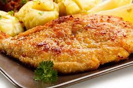

Milanesa
Back to homepage

Description
The Argentinian milanesa is also a breaded cutlet shallow-fried in oil. The cutlet typically comes either from the round or from the eye of the round, which are lean cuts, meaning they have less fat, marbling, and sinew when compared to most other cuts of beef. Besides beef, milanesa can also be prepared with veal, pork, or be made vegetarian by using soy cutlets or eggplant instead.
Ingredients
- 2 lb beef tenderloin
- 2 eggs , beaten
- 1 lb bread crumbs
- 2 cloves garlic , chopped
- 3 tablespoons chopped parsley
- Salt
- Black pepper
- Vegetable oil
Equipment
Instructions
- Remove the excess fat and nerves from the slices of beef.
- Soften the beef slices very slightly with a mallet.
- Mix the garlic and parsley with the beaten eggs, salt and pepper.
- Dip the beef slices in the beaten eggs, mix well and set aside in a cool place for 45 minutes.
- Pour the oil in a pan over medium-high heat and heat to 340 F / 170 C.
- Generously dredge each slice of beef in bread crumbs.
- Fry the milanesa a few minutes on each side.
- Remove from the pan and place on a plate lined with paper towels.
Back to top